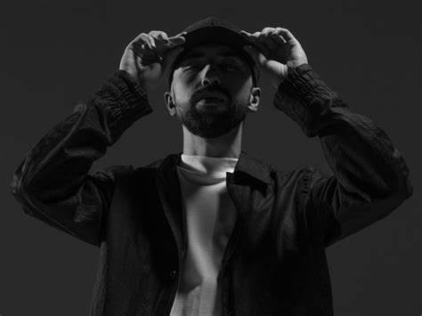

Биография и музыка группы «Мияги и Эндшпиль
Творчество группы «Мияги и Эндшпиль» (MiyaGi and Endshpil) берёт своё начало во Владикавказе. Ребята познакомились случайно и быстро поняли, что обладают похожими взглядами на музыку. Успех к артистам пришёл стремительно. Их необыкновенная популярность подтверждается большим количеством концертов по всей России, а также по странам ближнего зарубежья.
По национальности оба участника дуэта — осетины. Они родились во Владикавказе. Дуэт состоит из двух участников: Азамата Кудзаева (он же Мияги, Shau) и Сослана Бурнацева (он же Эндшпиль, Энди Панда).
Артист родился в семье медиков 13 декабря 1990 года. Настоящее имя музыканта — Азамат Кудзаев. Его отец — уважаемый и известный хирург, который воспитывал своих детей по осетинским традициям. В детстве он был довольно разносторонним ребёнком. Особенно будущий музыкант любил книги и единоборства. Он даже свой псевдоним взял из фильма «Малыш-каратист». Артист любит читать и считает, что для рэперов это необходимое занятие, чтобы развивать кругозор. Любимый писатель Азамата — Оскар Уайлд. У Кудзаева есть высшее медицинское образование, но врачом он стать не захотел. Артист рассказывал, что медицинские знания не раз помогали ему, когда требовалось экстренно оказать помощь.
Сослан родился 2 октября 1995 года. Он увлёкся рэп-музыкой благодаря своему дяде, который познакомил его с этим направлением. По словам Сослана, заниматься музыкой он начал в 16 лет. Артисту нравится соединять два стиля — «регги» и «рэп». Сплавив вместе эти два направления, Бурнацев создал уникальный стиль. Свой псевдоним Сослан позаимствовал из фильма «Адский Эндшпиль», который произвёл на него неизгладимое впечатление. Рэпер также увлекается футболом. Практически всё детство он провёл на стадионе. Музыкант очень мало рассказывает о себе и о своей личной жизни. Известно, что он женат и предпочитает вести спокойной образ жизни. Бурнацев также пару раз говорил, что хотел бы пожить за границей.
Мияги редко что-то о себе рассказывает. Из немногочисленных интервью, которые он дал, понятно, что творчеством Кудзаев начал заниматься давно, примерно с начала учёбы в университете. Получив диплом, артист переехал в Санкт-Петербург, где полностью посвятил себя музыкальной карьере. Соло он записал лишь несколько песен, а потом начал плотно сотрудничать с Эндшпилем, совместно с которым достиг успеха.
MiyaGi
эндшпиль
tumaniyo
KADI
hloy